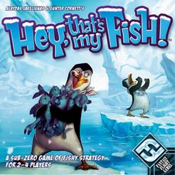

ShopBuddy
Created an Android application using Java and Android Studio; the application allowed the user to create a shopping list and saved the lists/changes in the shared preferences of the phone. The app used android notification services to send notifications such as budget warnings and special notes.
View Project

Circuit Board Testing
Collaborated with electrical engineers to learn more about different types of circuit boards and their functionalities. Then designed a C# graphic user interface that would EPROM chips and serial port communication to run more than 80 tests on 15 boards

Hey that's my Fish
Implemneted a console version of the classic board game using C++. The user plays against the computer and the computer makes its moves intelligently to make game more challenging.
View Project

Chained Hash Table
Implemented the data structure of a chained hashtable in C++; however, the chains converted from link list to binary search trees when the data entries collided exceedingly to promote efficiency.
View Project